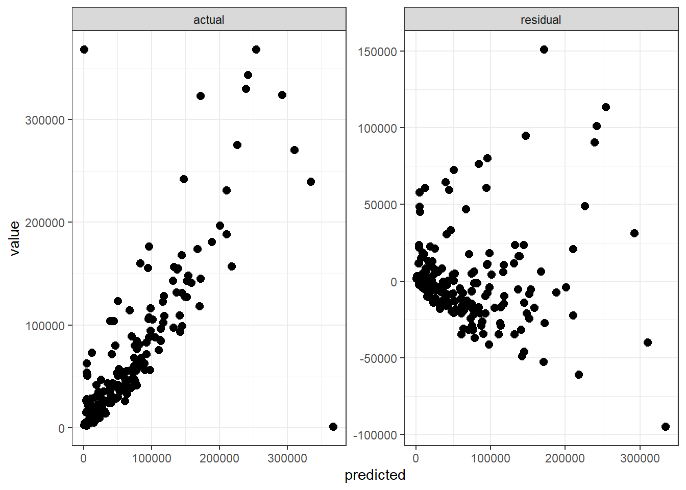

Chapter 19 Bootstrapping Estimates
19.1 Imagine
Imagine if we surveyed our management team to guage their preferences and their opinions about the likelihood of events occuring
How often a customer segment tends to default and how large a default that might be
the minimum, most likely, maximum of on-time-in-full metrics for vendors by material and service category
The probability that a low, medium, or high price will occur for the market value of our refined vegetable oil
The priorities we place on serving (a triage!) customer complaints
Each of these situations pairs outcomes with probabilities, in short a probability distribution. We can even feature priorities as probabilities if we define them the same way as a probability (always positive, all of them add up to one, etc.).
19.2 Tools
Tools and thought we will need
How to make draws from, and use random distributions
Writing functions with known run-times and verifiable results
Why we don’t use
forloops
What we will do now
- Write simulations using random number generation
- Explore the jackknife and end up at the bootstrap
- Simulate processes with memory
- Finally,
forloops!
19.3 [d p q r]unif
runif(): draws from the uniform distribution (others follow)
Build a discrete distributions: Use
sample().Assign some data to
values, specify the number of samples to be drawn frommvaluesinn_samples, specify probabilities for low, medium, and high values in ‘probs’, and also direct that we will sample with replacement.Count the draws from the three levels sampled using
table()
population_values <- 1:3
n_samples <- 100000
probs <- c(.5, .2, .3)
my_draw <- sample (population_values, n_samples, probs, replace=TRUE)
table(my_draw)## my_draw
## 1 2 3
## 50270 20041 2968919.4 Permutations with sample()
sample() is powerful – it works on any object that has a defined length().
- Permutations of
values
## [1] 1 2 3 5 4## [1] 5 4 3 6 2 1- Use
replicate()with eachsample()in a vector
## [,1] [,2] [,3]
## [1,] "Shemp" "Curly" "Curly"
## [2,] "Moe" "Shemp" "Shemp"
## [3,] "Larry" "Larry" "Larry"
## [4,] "Curly" "Moe" "Moe"- Or generate random lists
## [[1]]
## [1] "A"
##
## [[2]]
## [1] 3
##
## [[3]]
## function (..., na.rm = FALSE) .Primitive("sum")19.5 Resampling with sample()
When we resample from any existing distribution we generate the bootstrap family of estimators.
The
bootstrap_resamplefunction just draws one sample of sizen_sample = 3from the data.Then we
replicatethis sampling so many times (5 here)
bootstrap_resample <- function (data, n_sample) sample(data, n_sample, replace=TRUE)
t(replicate(5, bootstrap_resample (6:10, 3)))## [,1] [,2] [,3]
## [1,] 7 9 8
## [2,] 6 10 8
## [3,] 6 7 8
## [4,] 9 10 8
## [5,] 10 9 6The transpose simply arranges the samples in columns with the replications in rows.
19.6 Expected shortfall test
Suppose management, or even more so wary investors, wanted to understand how much capital they could probably need to have to cover loss exposures. So far we have been using value at risk to set the threshold for the expected shortfall as a gross risk-informed measure of the amount of capital required against potential losses. To do this we would calculate an estimate of the range within which we could expect the expected shortfall to be, say, 95% of the time. The range would then identify at least (lower bound) and at most (upper bound) the amount of capital needed for a given probability that our expresses our confidence.
First, we get some data, here exchange rates, and calculate percentage changes
exrates <- na.omit(read.csv("data/exrates.csv", header = TRUE))
exrates.r <- diff(log(as.matrix(exrates[, -1]))) * 100Then we build a helper function to calculated the expected shortfall once.
ES_calc <- function(data, prob){
data <- -as.matrix(data)
return(mean(data[data > quantile(data, prob),]))
}
ES_1 <- ES_calc(exrates.r[,1], 0.95)
ES_1## [1] 1.7Next, we take a sample of exchange rate returns (250 of them at random), calculate the ES, and do this a lot of times (1000 for now).
ES_sample <- replicate(10000, ES_calc(bootstrap_resample (-exrates.r[,1], 250), 0.95))
summary(ES_sample)## Min. 1st Qu. Median Mean 3rd Qu. Max.
## 1.36 1.81 1.94 1.96 2.10 3.10Finally, we calculate the upper and lower bounds using the same quantile() function as we did in finding a value at risk threshold for the expected shortfall.
## 2.5%
## 1.58## 97.5%
## 2.43## 50%
## 1.94A plot shows off our handiwork.
ES_sample_df <- data.frame(ES = ES_sample )
ES_title <- "Expected Shortfall USD-EUR 95%"
library(ggplot2)
#ES_sample_df %>%
ggplot(ES_sample_df, aes(x = ES)) + geom_density() + ggtitle(ES_title) + geom_vline(xintercept = q_0.025, colour="red") + geom_vline(xintercept = q_0.975, colour="red") + geom_vline(xintercept = q_0.500, color = "blue")
Koenker, Roger. 2005. Quantile Regression (Econometric Society Monographs). Cambridge, U.K.: Cambridge University Press.
McFadden, D. 1981. “Econometric Models of Probablistic Choice.” In Structural Analysis of Discrete Data with Econometric Applications, edited by C. F. Manski and D. McFadden. Cambridge MA: M.I.T. Press.
McNeil, A. J., R. Frey, and P. Embrechts. 2015. Quantitative Risk Management: Concepts, Techniques and Tools - Revised Edition. Princeton Series in Finance. Princeton University Press. https://books.google.com/books?id=SfJnBgAAQBAJ.
Ruppert, D., and D. S. Matteson. 2015. Statistics and Data Analysis for Financial Engineering: With R Examples. Springer Texts in Statistics. Springer New York. https://books.google.com/books?id=9X19CAAAQBAJ.